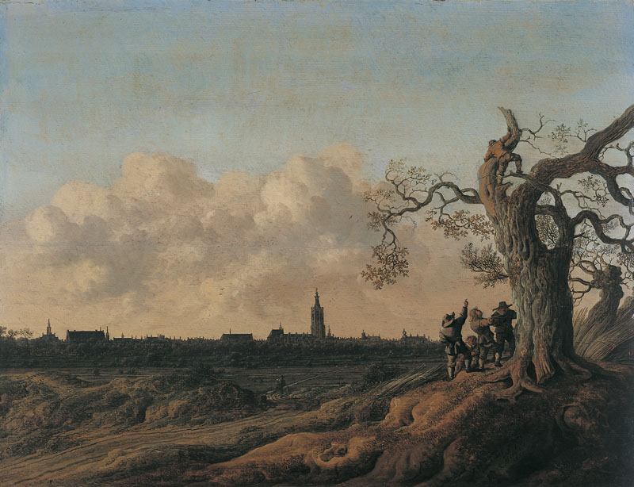

| Acceuil | Les Oeuvres par l'Auteur | Site de la Musée |
|  |
Savez-vous ?Peinture à l'huile sur tableau, et signé et daté par l'auteur en bas à droite. Créée en 1655. 48 x 62 cm de taille. Donnée à la Musée par M. Pierre Maury par legacy en 1892. Elle designe la paysage. |